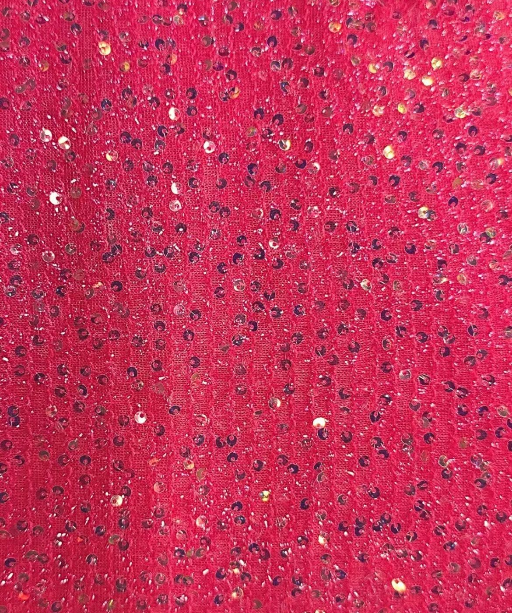

01
Lace fabricsผ้าลูกไม้
Our specialty — a wide range of patterns, colours and widths for dresses, bridal wear and crafts.สินค้าเด่นของร้าน มีหลายลาย หลายสี หลายหน้ากว้าง สำหรับชุดเดรส ชุดเจ้าสาว และงานฝีมือ

Fabric retail & wholesale · Phahurat, Bangkokผ้าปลีก-ส่ง · พาหุรัด กรุงเทพฯ
A wide range of fabrics for dressmakers, designers and wholesale buyers — from our store on the 3rd floor of China World. ผ้าหลากหลายสำหรับช่างตัดเสื้อ ดีไซเนอร์ และลูกค้าขายส่ง จากร้านของเราที่ชั้น 3 ไชน่าเวิลด์
About TSD Textileเกี่ยวกับ ทีเอสดี เท็กซ์ไทล์
Phahurat has long been Bangkok's centre for textiles, threads and traditional fabrics. From our store in China World, TSD Textile supplies dressmakers, designers, crafters and businesses — by the metre or in bulk. พาหุรัดเป็นศูนย์กลางการค้าผ้า ด้าย และผ้าพื้นเมืองของกรุงเทพฯ มายาวนาน ทีเอสดี เท็กซ์ไทล์ จากร้านของเราในไชน่าเวิลด์ จำหน่ายผ้าให้ช่างตัดเสื้อ ดีไซเนอร์ ผู้ที่รักงานฝีมือ และธุรกิจต่าง ๆ ทั้งแบบเป็นเมตรและแบบขายส่ง
Our specialty is lace, with new designs arriving regularly. Visit the store to see and feel the fabrics in person, and our team will help you choose. สินค้าเด่นของเราคือผ้าลูกไม้ ซึ่งมีลายใหม่เข้ามาอย่างสม่ำเสมอ เชิญแวะมาดูและสัมผัสเนื้อผ้าได้ที่ร้าน ทีมงานของเรายินดีช่วยคุณเลือก
Products & servicesสินค้าและบริการ
01
Our specialty — a wide range of patterns, colours and widths for dresses, bridal wear and crafts.สินค้าเด่นของร้าน มีหลายลาย หลายสี หลายหน้ากว้าง สำหรับชุดเดรส ชุดเจ้าสาว และงานฝีมือ

02
A broad selection of materials for clothing, craft and decoration, with new stock arriving often.ผ้าหลากหลายประเภทสำหรับตัดเย็บเสื้อผ้า งานฝีมือ และงานตกแต่ง มีสินค้าใหม่เข้าร้านอยู่เสมอ

03
Buy by the metre or in bulk. Contact us for wholesale pricing and current promotions.ซื้อเป็นเมตรหรือยกพับก็ได้ ติดต่อเราเพื่อสอบถามราคาส่งและโปรโมชันล่าสุด

Our specialtyสินค้าเด่นของเรา
From delicate florals to bold patterns, our lace collection is chosen for quality and variety, with new designs arriving regularly. ตั้งแต่ลายดอกละเอียดอ่อนไปจนถึงลายเด่นสะดุดตา ผ้าลูกไม้ของเราคัดสรรทั้งคุณภาพและความหลากหลาย พร้อมลายใหม่เข้ามาอย่างสม่ำเสมอ
Galleryแกลเลอรี


Find usที่ตั้งร้าน
Booth C28-29, Phahurat Road, Wang Burapha Phirom, Phra Nakhon, Bangkok 10200 ล็อก C28-29 ถนนพาหุรัด แขวงวังบูรพาภิรมย์ เขตพระนคร กรุงเทพฯ 10200
Get directionsดูเส้นทาง
Contactติดต่อเรา